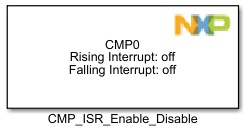
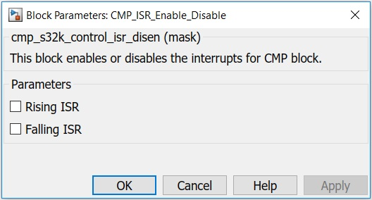

CMP ISR Enable Disable Block
The main functionality of the block is to allow the user to Enable/Disable CMP ISRs.
Block Image
Inputs:
- None
Outputs:
- None
Parameters and Dialog Box
Rising Interrupt Enable
Enables the CFR interrupt from the CMP. When this field is set, an interrupt will be asserted when CFR is set.
Falling Interrupt Enable
Enables the CFF interrupt from the CMP. When this field is set, an interrupt will be asserted when CFF is set.
Block Dependency
Please do the following:
- Use CMP_Config Block to configure the comparator.
Block Miscellaneous Details
- None